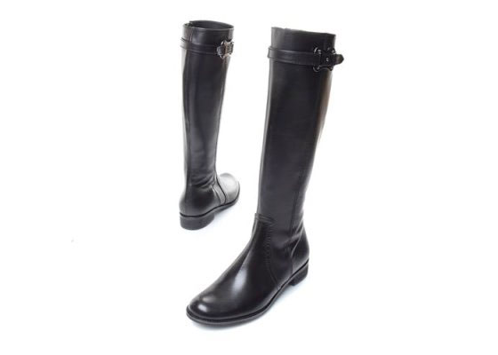
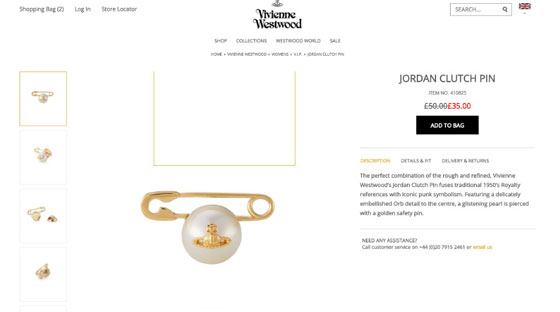
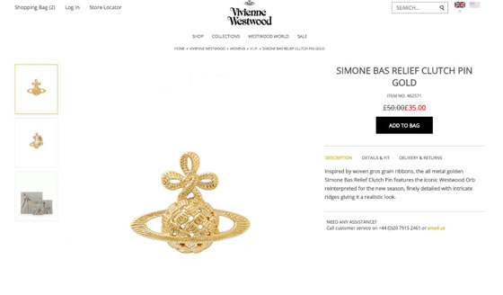

정말정말 오랜만에 롱부츠 구입
현백에서 세라 롱부츠를 하나 샀당 - 위 사진이랑 같은디자인 인데 내가 구입한건 브라운
한국에서 슈즈구매 자체가 엄청 오랜만인데 기본적으로 발 앞쪽이 굉장히 좁고 납작해서 불편했음
요새 이게 유행인가 싶을정도로 신어보는 신발이 대부분이 불편했당 :p
발이 너무 불편하다고 말하니까 판매하시는 분이 이태리에서 온 가죽이고 유럽에서 온 신발이라 원래 그렇다는 멘트를 하시면서
끊임없이 푸쉬 하셨는데 ㅋㅋㅋㅋㅋ
아니 시발 내가 그 유럽서 살다가 한국온지 일주일이 채 안되었다고 말하고싶었음
유럽신발은 다 그렇다니 무슨 뻥을쳐도 그렇게 심하게 치세요 아저씨 ㅋㅋㅋㅋㅋㅋㅋㅋㅋ
근데 확실히 가죽은 느므 질이 좋아서 '그...그래 원래 새신발은 촘 불편하잖아? 신다보면 적응되겠지' 하고 구매했다가
다음날 바로 리펀했다 -_- 집에서 아무리 이리신어보고 저리 신어봐도 이건 아니었음 ㅋㅋㅋ
내가 닥마같이 편한 워커만 신다가 오랜만에 여성여성한(?) 부츠를 신어서 그런가 싶기도하고
편한신발 찾기 굉장히 힘들었다.
그와중 건진 SAERA 세라 롱부츠 / 이 브랜드는 첨 사보는데 길에서 매장은 자주 봤었음
편하고 따수워요 :3
그리고 롱부츠를 사니까 뜬금없이 예전에 한참 잘 신고 다니던 바이커부츠가 사고싶은거임 ㅡㅡ;;
20대초반 질풍노도(...) 시기에 뻘겅머리하고 펑크룩 입고 바이커 부츠 신고다녔던 그때 그 바이커 부츠 -_-;;
............그래;;; 롱부츠 브라운 샀으니 짧은사이즈 깜장이 있어야지;; 고민되면 두개사 ㅋㅋㅋㅋㅋㅋㅋㅋ
해서 다시 현백 방문
바이커스타일을 엄청 뒤지고 다녔는데 고세 매장서 꽤 맘에드는것 발견
신어보는데 이번에는 판매자분이 요즘 대세는 브라운이라고 동일한 디자인의 브라운색 부츠를 자꾸 권했음
뭘 모르는 사람이나 검은색 신는다면서 ㅋㅋㅋㅋㅋ
아...아니 난 브라운 샀으니까 이번엔 깜장사려고 온건데 ^^;;;;
아저씨 잘못 짚으셨어요 ^^;;;;
자꾸 브라운 사라고 하니까 순간 '브라운색상이 겁나 안팔렸나?' 란 생각이 제일 먼저 들었음 ㅋㅋㅋㅋ
플러스 단골멘트 이거 하나 남았다 / 오늘 안사면 없다 등등 드립 시전하길래
웃으면서 도망나왔음;;
팔아야 하는 그들의 사정도 이해하고 싶지만 한국에서 쇼핑할때 판매자들의 절박함과 여유없음이 너무 느껴질때는
쇼핑하고 싶은 생각 싹 달아남;; 걍 도망가고 싶어요;;;;

그래서 걍 집에와서 ASOS에서 구입
ALDO 바이커 부츠 / 때마침 Chinese new year 기념 +18% OFF 해주는 프로모션 중이라 £78 정도에 구입했당.
잘샀다 희희희


그리고 잠이 안와서 누워서 인터넷 하다가 보게된 비비안웨스트우드 세일 ㅋㅋㅋㅋㅋㅋ
이렇게 콜렉숑이 추가되는군요 세일만세!!
둘다 늠 맘에듭니다 :D :D
뿌듯한 구매였어요 ^^***